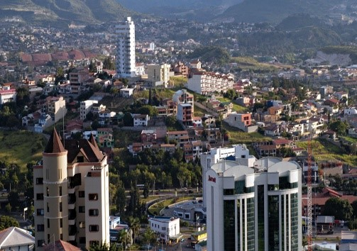

Tegucigalpa, oficialmente Tegucigalpa, Municipio del Distrito Central y abreviado como Tegucigalpa, M. D. C.,nota 1 es la capital y sede de gobierno de la República de Honduras, junto a su ciudad gemela Comayagüela, según los artículos 8 y 295 de la actual Constitución de Honduras.45 Es una de las ciudades más pobladas de América Central.
 Aunque ya desde 1536 se le conocía al pequeño poblado a las orillas de la cuenca del río Choluteca (hoy en día el Centro Histórico) por el peculiar nombre de Taguzgalpa, es con la llegada de los españoles a la región en busca de minerales que se reconoce el 29 de septiembre de 1578 como el día que marca su fundación bajo el nombre de Real de Minas de San Miguel de Tegucigalpa. Tres siglos después, el 30 de octubre de 1880 se convierte en la capital del país, durante la presidencia de Marco Aurelio Soto.6
Durante la corta existencia de la Constitución Política de la República Federal de Centro América, entre 1824 y 1839, Tegucigalpa fue declarada un distrito federal y capital de los entonces unidos en una sola nación: los estados de El Salvador, Guatemala y Honduras.7 Después de este fallido intento de preservar una república centroamericana, Honduras regresa a ser un país individual e independiente y el 30 de enero de 1937, se reforma el Artículo 179 de la Constitución de Honduras de 1936 bajo el Decreto N.º 53 y se establece a Tegucigalpa y Comayagüela como el Distrito Central. El 9 de diciembre del mismo año se ratifica bajo el Decreto N.º 2.8
El Distrito Central se encuentra en la región montañosa sur central de Honduras en el departamento de Francisco Morazán, del cual es también la cabecera departamental.9 El área metropolitana de Tegucigalpa y Comayagüela se encuentra en un valle, rodeado por montañas y ambas, siendo ciudades gemelas, están geológicamente separadas por la cuenca del río Choluteca que les atraviesa.10 El Distrito Central es el municipio más grande y más poblado de Francisco Morazán y el decimocuarto más grande de Honduras.11 Tegucigalpa y Comayagüela, juntas, es la ciudad más grande y más poblada de Honduras.